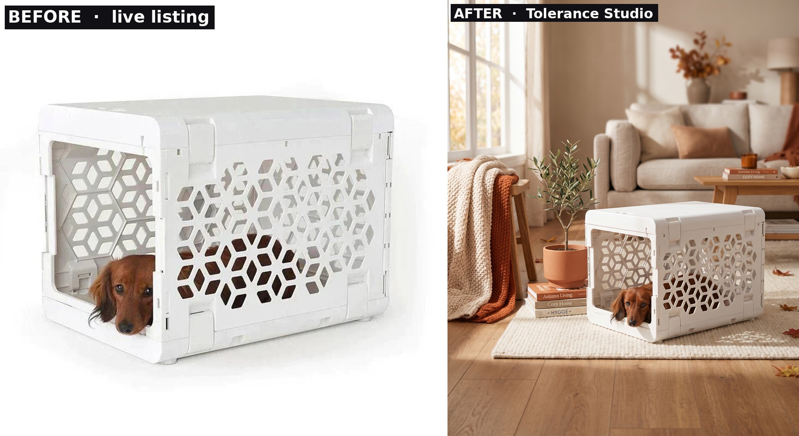
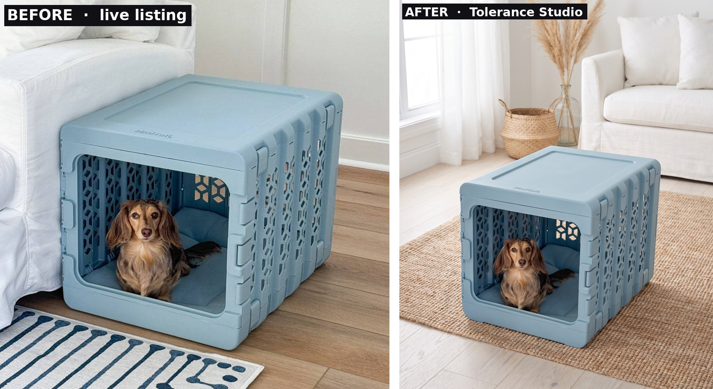
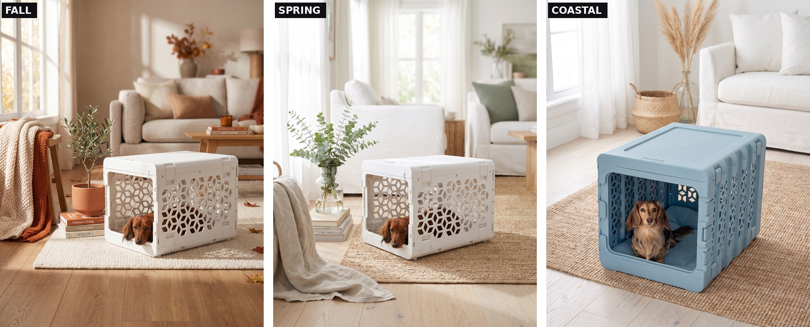
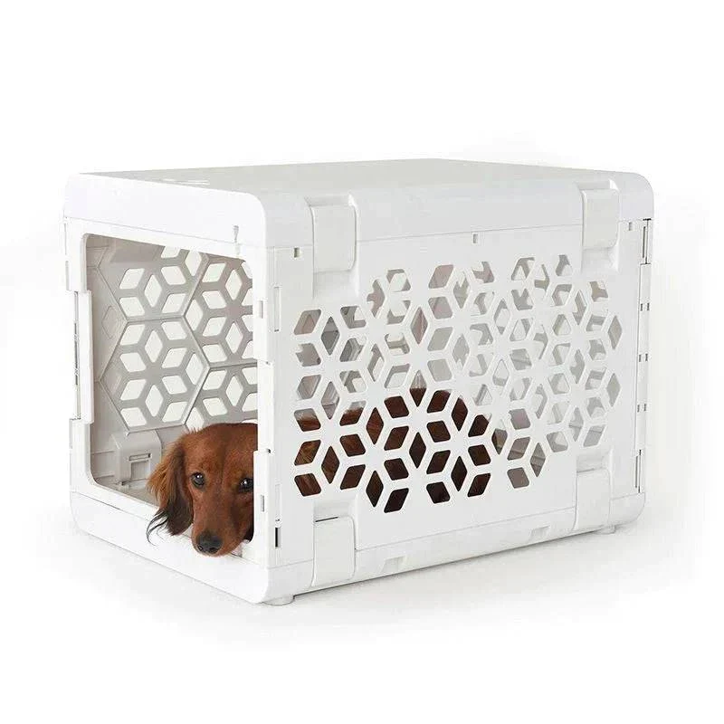
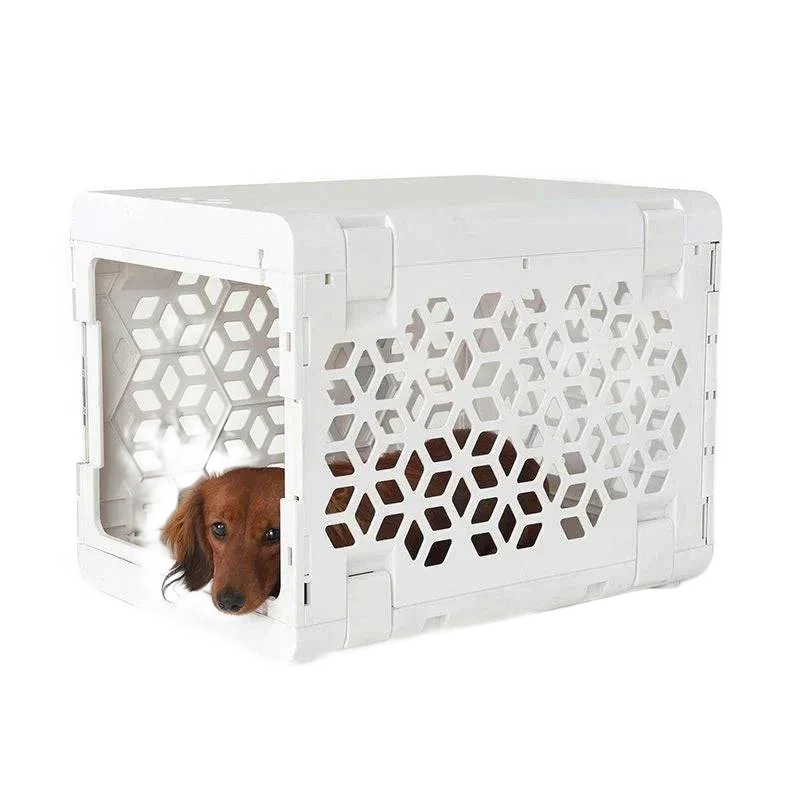

A design-led DTC pet brand with strong existing imagery. The brief isn't "fix your photos." It's seasonal and lifestyle variants of hero products, built from their own product shots, without booking another shoot. Everything below is real output from the brand's actual listings.
Free sample · built from their own listings
Before → after
Two products, taken straight from their live white-background listings and placed in art-directed seasonal scenes. The product stays exact, the world around it changes. This is the free sample a brand gets before any invoice.

Pet crate, white — live listing (left) to a warm fall living room (right).

Pet crate, blue — masked from a busy listing, dropped into a bright coastal room. Lattice and fur held.

One catalog, one brand world — the range that lets a brand buy fall, spring, and summer campaigns off the same products.
Each scene: minutes of generation, held product-correct, art-directed. The studio's work is the direction and the accuracy check, not the labor.
Spec / accuracy checklist
Binary pass/fail
Geometry — crate proportions, fold mechanism, and mesh pattern correct. No warping.
Material — fabric, mesh, and frame finish read true; no plastic-look where there's metal or fabric.
Mechanism — latches, hinges, and dividers correct. Nothing invented.
Branding — brand marks and labels legible and correct.
Color — within the brand's palette spec.
No phantom features — no size, port, or fitting the real product doesn't have.
Rule: any single fail = reject.
How the pipeline works
From product shot to on-brand scene
Every piece starts with a real product photo or existing hero image. The pipeline takes it from there — isolate the object, build the AI scene around it, composite together in high res.

Source listing
→

Isolated
→
Scene built
→
Seasonal variant
Same pipeline · different piece
Source shot to scene — pet crate
⟷
SourceComposited
Drag to compare the source product shot to the finished composite.